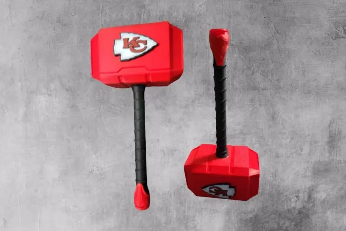
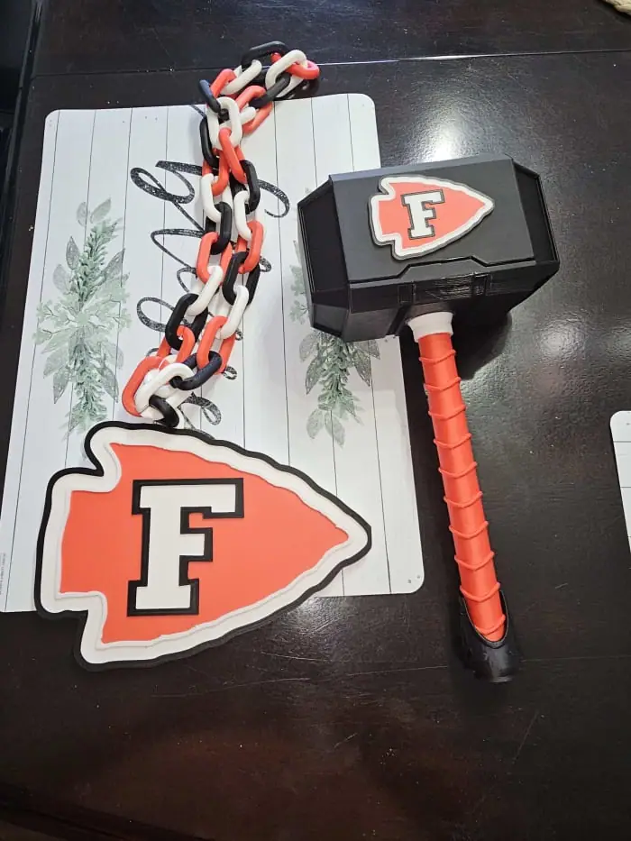
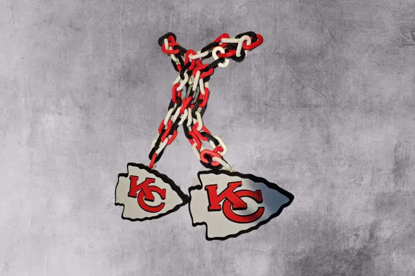
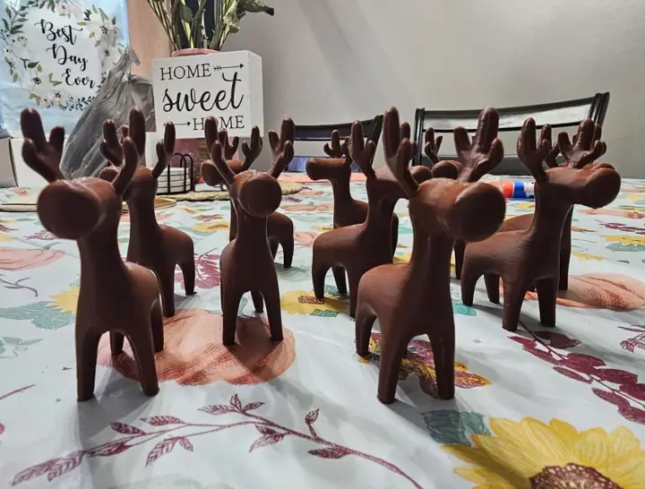
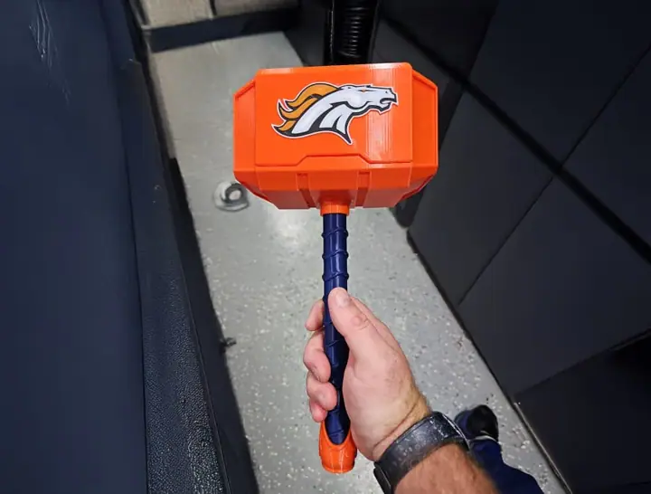
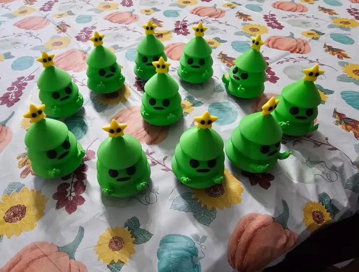

Your team.Your idea.Layer by layer.
Hype chains, swag hammers, coasters and holiday décor, printed to order in any team's colors. Gary and Amanda's family shop has turned ideas into reality for fans across Missouri and beyond.
to
order





What we're known for
Every piece is made to order. Pick a pre-made design or go fully custom with your logo, numbers, colors and size.
Shop by team
We can do any team in any sport, plus custom work for businesses and club teams. Every item listed can be scaled, recolored, or given your own logo or text.
Kansas City Chiefs
Got a sketch, a photo, or just an idea?
At G&A 3D Creations & More, we believe every great idea deserves to become real. You're in control of the design: size, shape, color and function. We'll work closely with you until every detail matches what you pictured.
We welcome ideas of all kinds, for personal use, school spirit, business branding, or something totally one-of-a-kind. No idea is too big or too small.
Fully custom chains and hammers add a one-time design fee. Bulk and team orders quoted per project. Consultations are free.
- 1
Tell us the idea
Send a sketch, a photo, a file, or a description. Call, text, or use the quote form.
- 2
We design & quote
Free consultation. We model it, pick your colors and size, and confirm the price before printing.
- 3
Print & finish
Printed layer by layer, then cleaned and hand-finished so every piece leaves the shop ready to show off.
- 4
Pick up or ship
Free pickup in Arnold, MO, or ask us for a shipping quote anywhere in the USA.
Bulk production
Matching chains for a whole roster, award hammers for a league, branded giveaways for your business. Consistent quality across every piece.
Off the print bed
Real orders, photographed in the shop. Tap any photo to see it larger.
"Ordered my son a battle hawks necklace and he is obsessed! It's wonderfully made and the customer service is top tier!"Cara Maher · repeat customer

Started as a hobby. Grew because of you.
G&A 3D Creations & More was born from a love for creativity and craftsmanship. What started as a personal hobby turned into a family business when friends and relatives began asking for custom pieces.
Today we specialize in custom 3D printing, 3D modeling and personalized design for clients across Missouri, the USA and worldwide, with a personal touch on every project.
The crew behind the prints
From the blog
3D printing tips, project highlights, and behind-the-scenes looks at how we work.
Let's build something.
Need a quote or want to talk through an idea? Reach us any time by phone, text or Facebook. Consultations are always free.